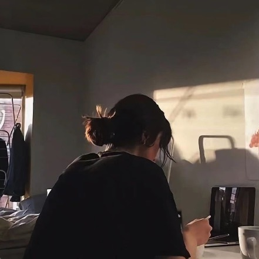

1、最灵繁的人也看不见自己的背脊。——非洲 2、最困难的事情就是认识自己。——希腊 3、有勇气承担命运这才是英雄好汉。——黑塞 4、与肝胆人共事，无字句处读书。——周恩来 5、阅读使人充实，会谈使人敏捷，写作使人精确。——培根 6、最大的骄傲于最大的自卑都表示心灵的最软弱无力。——斯宾诺莎 7、自知之明是最难得的知识。——西班牙 8、勇气通往天堂，怯懦通往地狱。——塞内加 9、有时候读书是一种巧妙地避开思考的方法。——赫尔普斯
今天天气
真不错 THis is a good day
!
